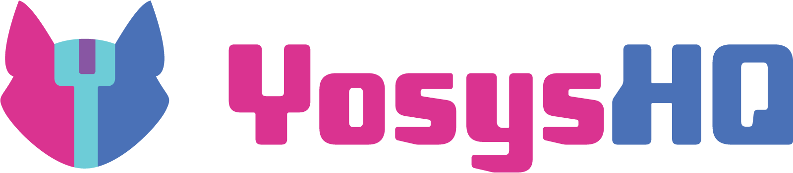

Commercial Support and Development
YosysHQ GmbH was founded by Claire Wolf and other Yosys maintainers with the goal of funding members of the dev team working on Yosys through providing commercial support of Yosys and our other tools.
If you want to support the development of Yosys, please consider one of the following options:
- Subscribing to our Tabby CAD Suite, a commercial extension of the OSS CAD Suite which additionally includes industry-grade SystemVerilog and VHDL parsers.
- Buying support credits, that can be exchanged for support, and if go unused are spent on developing the open source tools.
- If you need a new feature added to Yosys, YosysHQ also carries out custom project work.